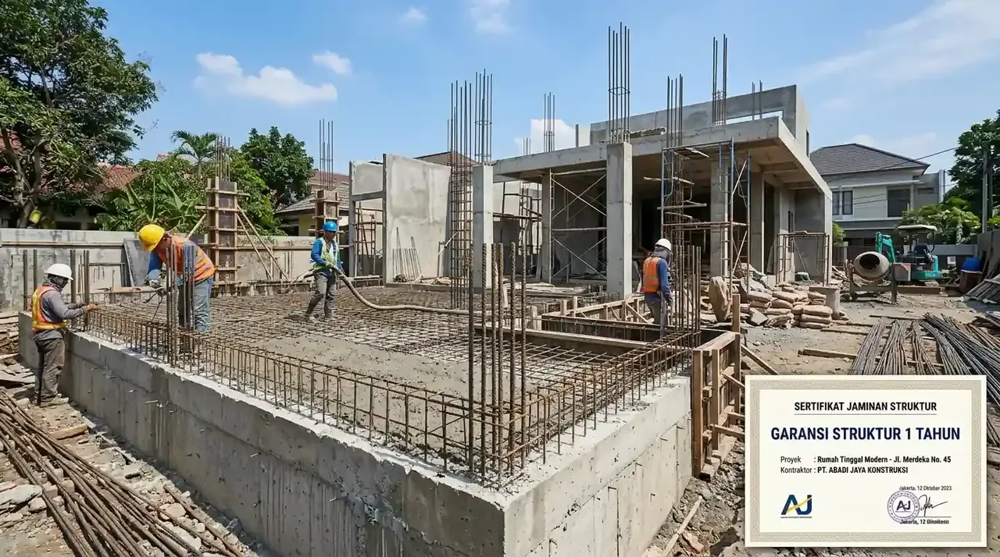

Apa Saja Fasilitas dan Spesifikasi dalam Paket Bangun Rumah Hemat?
Paket hemat bangun rumah mencakup pekerjaan pondasi cakar ayam, struktur beton bertulang SNI, dinding bata ringan, lantai granit 60x60, dan atap baja ringan.
Hemat dalam standar Kontraktor Bangunan bukan berarti memangkas mutu konstruksi, melainkan melakukan rekayasa nilai (value engineering) secara presisi. Kami mengeliminasi pemborosan sisa material (waste reduction), mengoptimalkan modul bentang struktur agar efisien terhadap panjang besi beton, serta memanfaatkan rantai pasok material langsung dari produsen resmi.
Berdasarkan data statistik Kementerian PUPR & BPS Konstruksi periode 2025/2026, penggunaan skema borongan turnkey kontraktual terpadu terbukti mampu menekan potensi deviasi biaya hingga 28% dibandingkan metode upah harian swakelola. Seluruh pekerjaan dalam paket bangun rumah hemat garansi 1 tahun diawasi oleh mandor berpengalaman dan project engineer bersertifikasi.
- Pondasi & Struktur Bawah: Pasangan batu kali menerus, sloof beton bertulang pembesian SNI, dan tapak cakar ayam pada titik sudut utama.
- Struktur Kolom & Balok: Mutu cor beton setara K-225 dengan begel rapat anti geser berstandar gempa wilayah Indonesia.
- Dinding & Plesteran: Bata ringan hebel tebal 10 cm dipasang dengan mortar perekat instan, diplester rapi, dan diaci mulus.
- Plafon & Atap: Kuda-kuda baja ringan Zincalume C75 tebal 0.75 mm, reng 0.45 mm, penutup genteng metal/flat beton, dan plafon gypsum rangka hollow galvanis.
Mengapa Garansi Struktur 1 Tahun Sangat Krusial Bagi Pemilik Rumah?
Garansi struktur 1 tahun melindungi pemilik rumah dari cacat tersembunyi seperti pergeseran pondasi, retak dinding, kebocoran atap, dan kegagalan sanitasi.
Siklus cuaca tropis penuh (satu musim kemarau dan satu musim penghujan) diperlukan untuk menguji kestabilan tanah dan kekuatan sambungan struktur rumah yang baru berdiri. Apabila pondasi mengalami penurunan atau talang atap mengalami kebocoran saat badai pertama datang, sertifikat garansi resmi menjamin tim kami langsung turun ke lokasi untuk melakukan perbaikan menyeluruh tanpa memungut biaya sepeser pun dari Anda.

Pekerjaan pembesian kolom dan pengecoran struktur beton bertulang dengan pengawasan ketat untuk memastikan kekuatan jangka panjang.
Tabel Rincian Komparasi Paket Bangun Rumah: Hemat vs Standar vs Premium
Perbandingan paket bangun rumah disesuaikan dengan luas bangunan, spesifikasi material finishing interior, dan target anggaran Anda.
Sebagai kontraktor bergaransi resmi, Kontraktor Bangunan menyediakan fleksibilitas pilihan paket yang dapat disesuaikan dengan rancangan denah rumah idaman keluarga Anda:
| Parameter Layanan | Paket Hemat Ekonomis | Paket Standar Modern | Paket Premium Luxury |
|---|---|---|---|
| Kisaran Biaya per m² | Rp 3.300.000 – Rp 3.800.000 | Rp 4.000.000 – Rp 4.800.000 | Rp 5.200.000 – Rp 7.500.000+ |
| Lantai Utama | Granit Tile 60x60 Polish | Granit Tile 60x60 / 80x80 Glazed | Granit Tile 80x80 / Marmer Import |
| Kusen & Jendela | Aluminium 3 inch Hitam/Putih | Aluminium 4 inch Powder Coating | UPVC / Aluminium Thermal Break |
| Plafon Interior | Gypsum 9mm Rangka Hollow | Gypsum Drop Ceiling + Indirect LED | Gypsum Desain Custom + Smart Lighting |
| Perangkat Sanitair | Kloset Duduk & Shower Standar SNI | Set TOTO / American Standard | Smart Toilet & Grohe Premium Fitting |
| Sertifikat Garansi Struktur | Resmi 12 Bulan (1 Tahun) | Resmi 12 Bulan (1 Tahun) | Resmi 24 Bulan (2 Tahun) |
Bagaimana Tahapan dan Skema Pembayaran Turnkey yang Aman?
Skema pembayaran berbasis opname fisik lapangan melindungi pemilik proyek dari risiko wanprestasi dan keterlambatan konstruksi.
Kami menerapkan sistem transparansi keuangan total. Anda tidak perlu menyetorkan dana besar di awal tanpa kepastian kerja. Pembayaran dibagi ke dalam 4–5 tahapan termin yang hanya dicairkan setelah mandor pengawas dan Anda bersama-sama menyetujui berita acara pencapaian progres fisik:
- Termin 1 (DP 20%): Mobilisasi material, pengukuran bowplank, dan pekerjaan galian pondasi struktur bawah.
- Termin 2 (25%): Penyelesaian struktur kolom balok lantai 1, dak lantai 2 (jika ada), dan pasangan dinding bata ringan.
- Termin 3 (25%): Pemasangan rangka atap baja ringan, penutup genteng, dan instalasi pipa kelistrikan/MEP.
- Termin 4 (25%): Pekerjaan plester aci, pemasangan lantai granit, sanitair, cat interior & eksterior.
- Retensi Garansi (5%): Ditahan selama masa uji fungsi hingga serah terima kunci dan penerbitan sertifikat garansi resmi.
Mengapa Memilih Kontraktor Bangunan Sebagai Kontraktor Bergaransi Resmi?
Kontraktor Bangunan memiliki legalitas badan usaha resmi, sertifikasi LPJK, ribuan portofolio terpercaya, dan tim arsitek internal berdedikasi.
Memilih paket hemat bangun rumah bersama kami memberikan Anda ketenangan total. Kami mengurus seluruh aspek teknis, mulai dari perancangan denah 2D, pemodelan 3D arsitektur, perhitungan RAB akurat, hingga pengurusan izin Persetujuan Bangunan Gedung (PBG) di sistem SIMBG Kementerian PUPR.
Wujudkan rumah hunian yang aman, kokoh, dan estetik bagi keluarga tercinta sekarang juga tanpa rasa was-was.
Pertanyaan yang Sering Diajukan (FAQ)
Kesimpulan Praktis
Membangun rumah baru dengan anggaran efisien dan kualitas kokoh bukan lagi impian yang sulit dicapai. Dengan memilih paket bangun rumah hemat yang dilindungi garansi struktur resmi 1 tahun, masa depan hunian keluarga Anda terjamin aman dan bebas dari biaya perbaikan tak terduga.